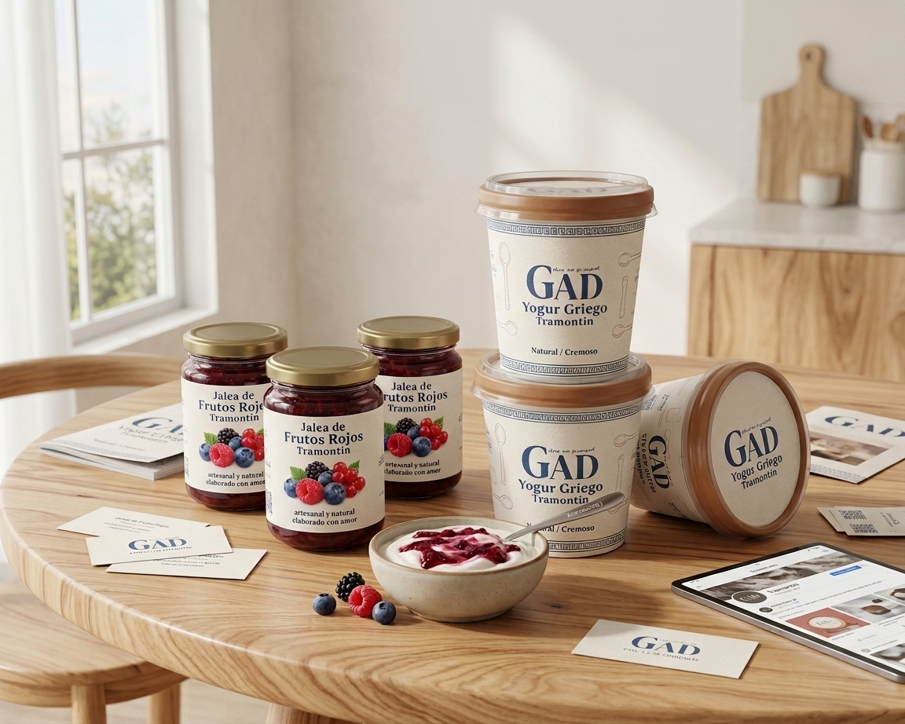
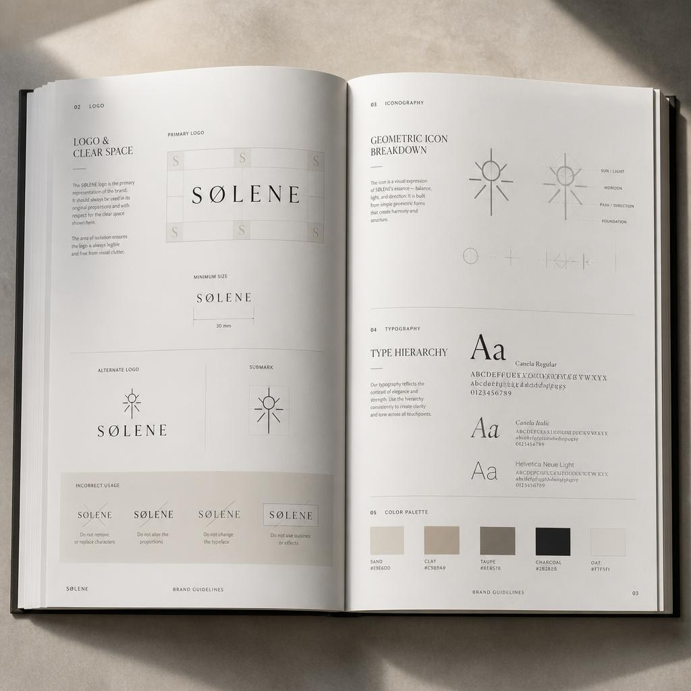
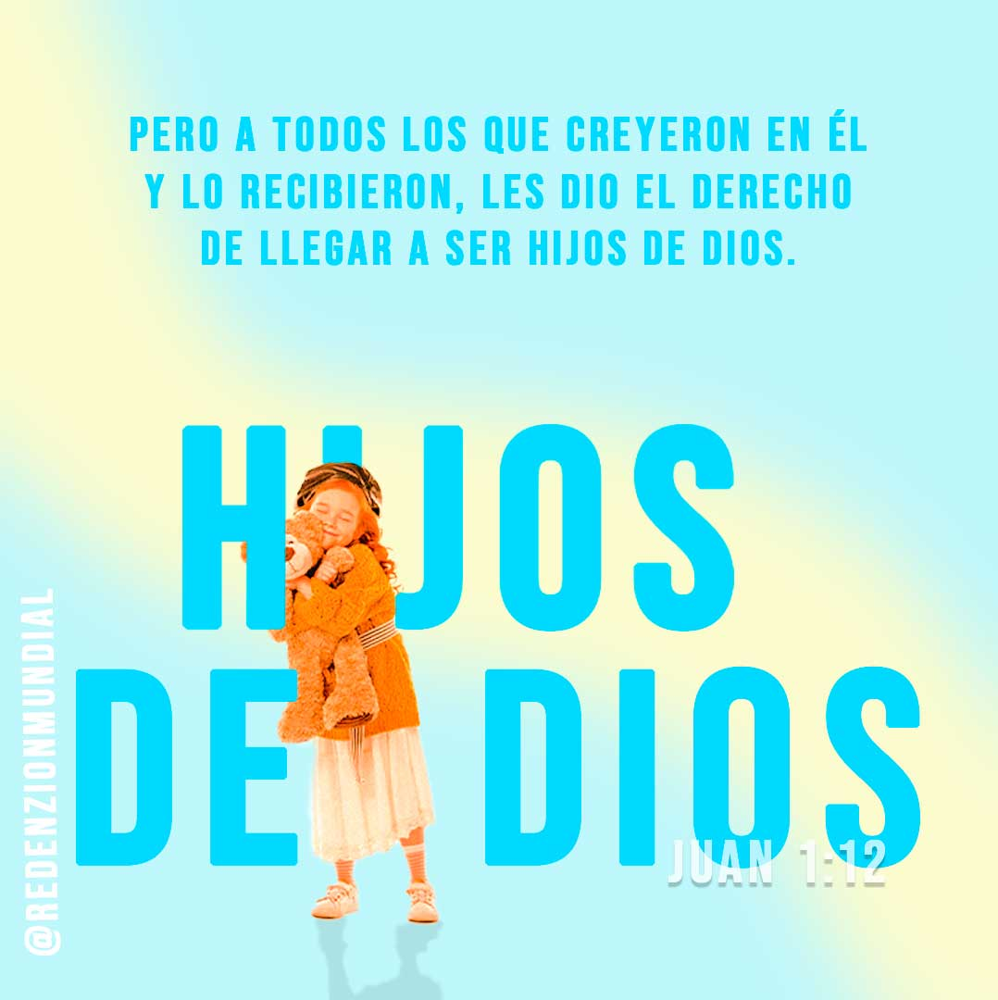
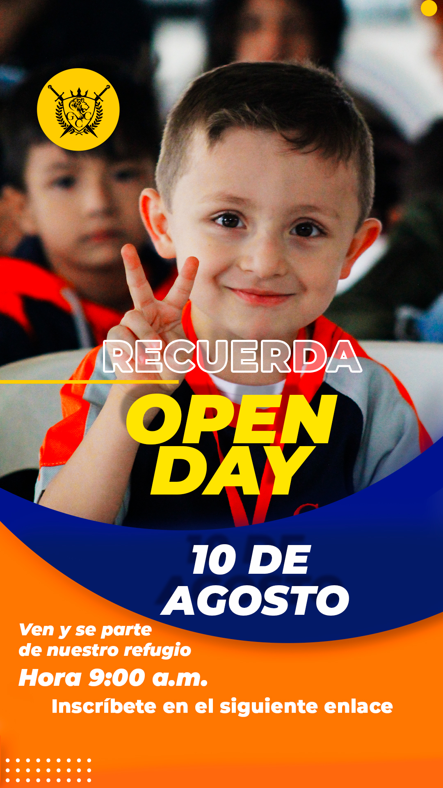
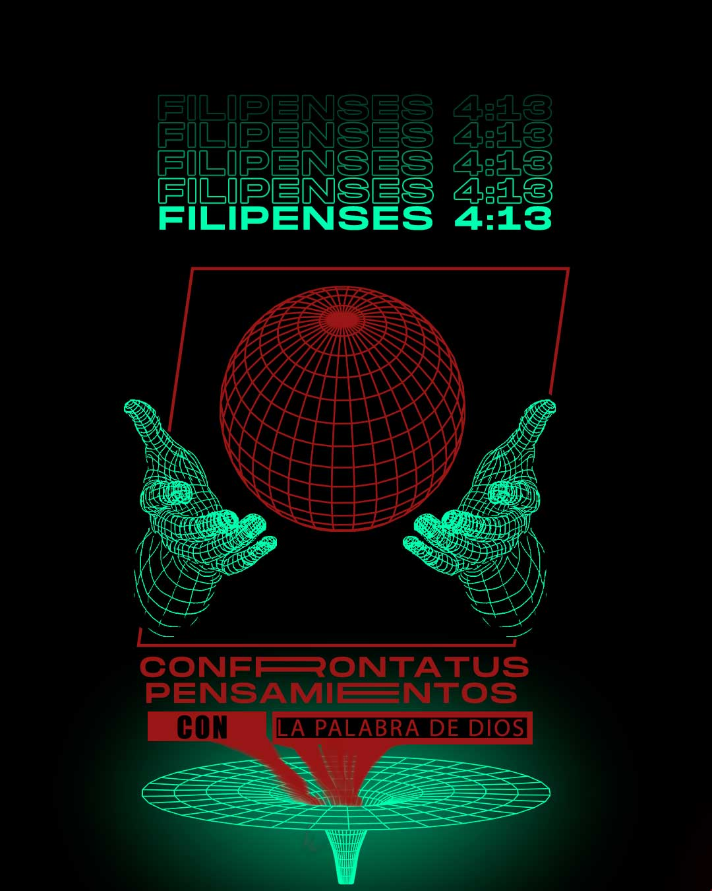
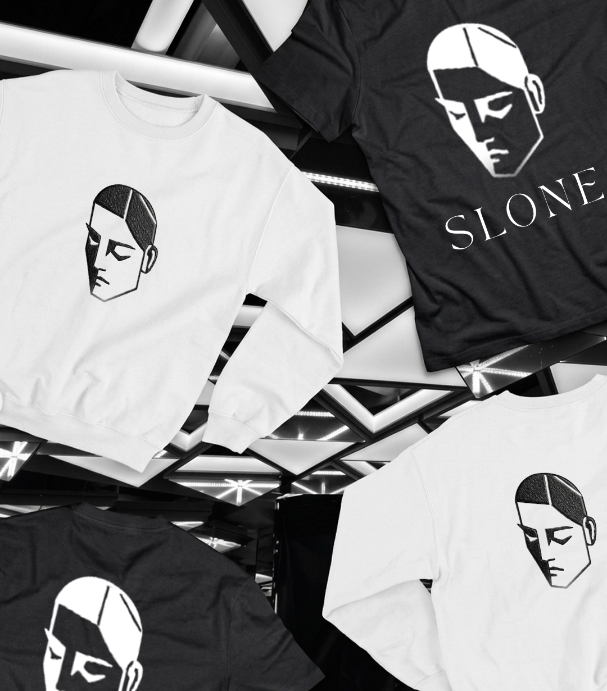
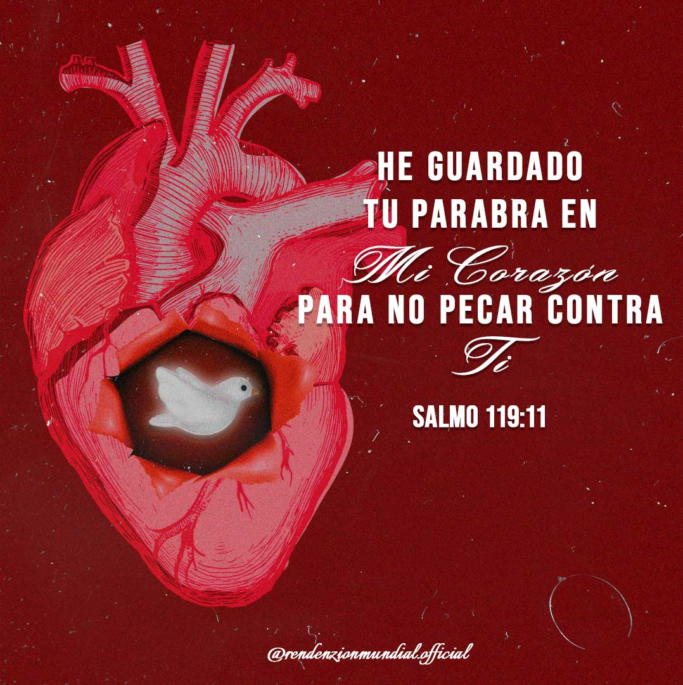
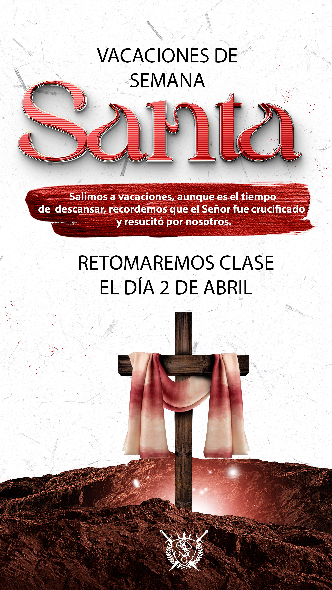
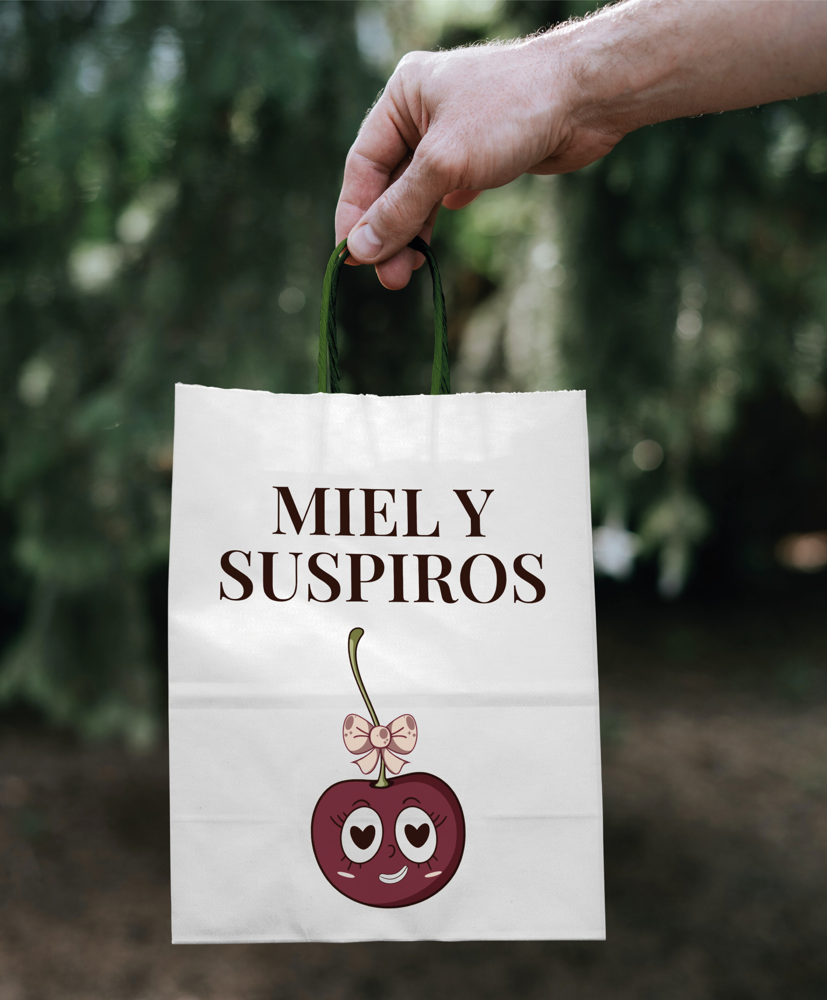
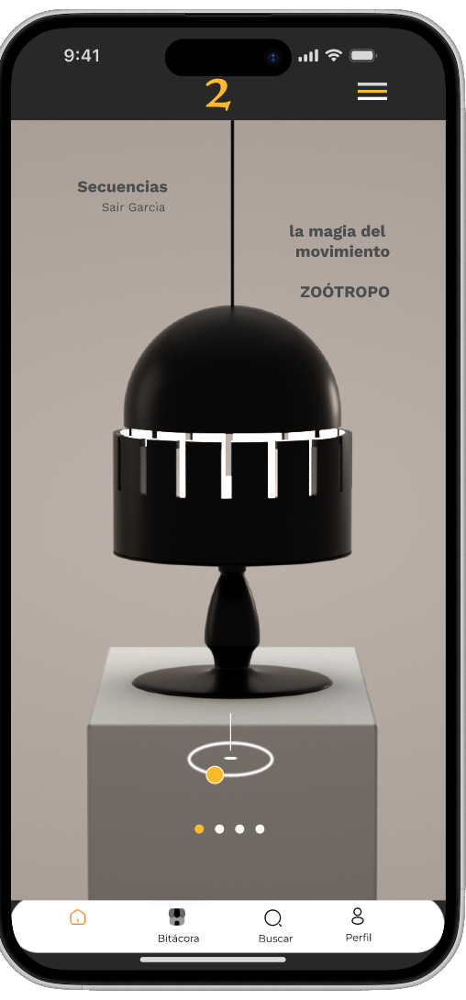

Diseño gráfico.
Diseñadora gráfica enfocada en crear identidades, piezas visuales y experiencias digitales que convierten ideas en comunicación.
Diseño · Branding · DigitalSoy diseñadora gráfica y trabajo entre concepto, comunicación y estética.
Me interesa crear soluciones visuales que no solo
se vean bien, sino que tengan una intención detrás.
Mi trabajo abarca desde la construcción de marcas
e identidades visuales hasta el desarrollo de piezas
digitales, contenido para redes, diseño editorial,
packaging e interfaces.
Branding
Identidad visual, logotipos, sistemas gráficos, tipografía, color y aplicaciones de marca.
Diseño gráfico
Piezas de comunicación, campañas, material promocional y contenido visual.
Diseño digital
Interfaces, UI, experiencias digitales y sistemas visuales para productos digitales.
Editorial
Catálogos, publicaciones, presentaciones y composición de piezas editoriales.
Social media
Diseño de contenido, campañas y sistemas visuales para comunicación en redes sociales.
Packaging
Diseño de etiquetas, empaques y aplicaciones gráficas para productos.
Pensar. Diseñar.
Cada proyecto comienza entendiendo qué necesita
comunicar y para quién.
A partir de ahí desarrollo conceptos, exploro
diferentes posibilidades visuales y construyo
soluciones que puedan funcionar más allá de una
sola pieza.
Busco que cada decisión gráfica tenga un propósito:
desde una tipografía hasta la forma en que una marca
aparece en pantalla.
Adobe
Illustrator · Photoshop · InDesign · After Effects · Premiere Pro
CorelDRAW
Diseño y preparación de piezas para producción gráfica.
Canva
Desarrollo de contenido y sistemas gráficos para comunicación digital.
Herramientas digitales
Integración de herramientas digitales y de IA como apoyo al proceso creativo.

Identidad visual · Diseño gráfico

Brand identity

Tipografía · Dirección visual

Comunicación visual · Diseño digital

Diseño gráfico · Tipografía

Merchandising · Dirección de arte

Diseño gráfico

Contenido visual

Branding · Packaging

UI · Diseño digital
¿Buscas diseño para tu proyecto?
servicios→